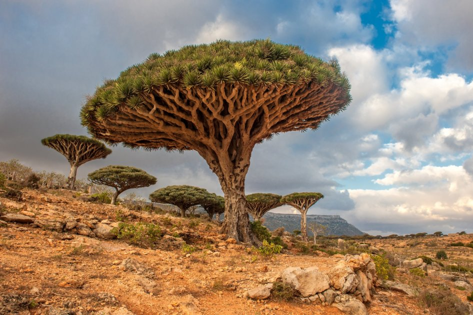

<h2>4. Драконовые деревья на острове Сокотра, Йемен</h2>
Если в душе ты вечный искатель приключений и настоящий Индиана Джонс, тебе дорога в одно из самых необычных мест Йемена – остров Соктора. Остров примечателен растущими здесь деревьями, которые выделяют сок ярко-красного цвета. Сделав надрез в коре, можно увидеть, как Драконово дерево начинает «кровоточить».
</br>

</br>
Раньше таких деревьев (порой тысячелетних) было довольно много на Канарских островах, но вследствие активного сбора ценной красной смолы их количество значительно уменьшилось. Посмотреть на небольшую рощицу все еще можно в Йемене.
</br>


